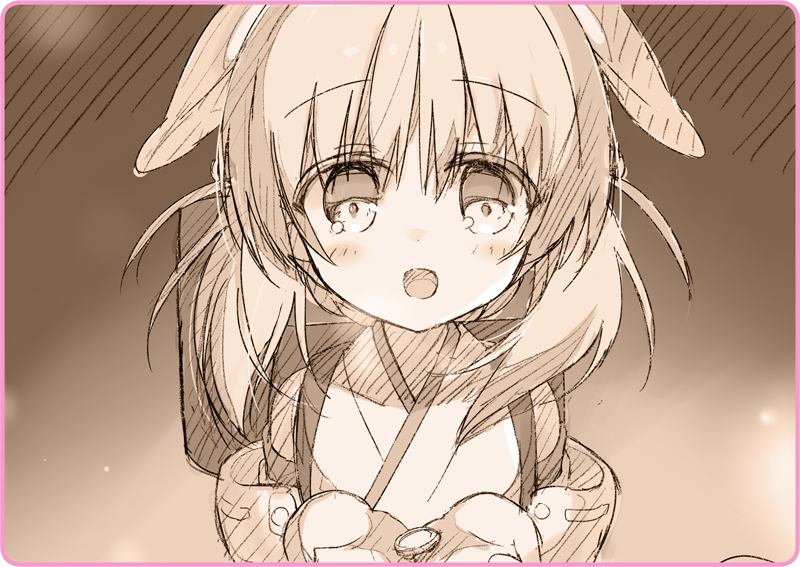

Đêm dài tĩnh lặng trôi qua, và dù hơi muộn, buổi sáng cuối cùng đã tới.
Trời vẫn đang đổ tuyết. Những tinh thể tuyết cứ thế rơi xuống, tựa như bị bóc tách ra khỏi nền trời trắng xóa kia.
Haizakura bước vào phòng ngủ, lo rằng vị khách của mình đang ngủ nướng.
Căn phòng phản chiếu ánh tuyết, man mác vẻ cô tịch.
Em dáo dác nhìn xung quanh.
Trong phòng thật lạnh lẽo, chẳng hề cảm thấy hơi ấm con người.
Chiếc giường trống trơn, đặt trên đó là một tờ giấy ghi chú có dằn một đồng shilling.
Chiếc xe lăn đặt nơi góc phòng cũng biến mất, như thể ngay từ đầu nó chưa từng ở đó.
＊ ＊ ＊
Lilia: “Hai… ba…”
Lilia ra sức đẩy chiếc xe lăn bị kẹt bánh trong tuyết.
Một buổi sáng lạnh giá đến đáng sợ. Dù đã đeo găng nhưng bàn tay đang đẩy của cô cũng bị cóng đến không sao dồn lực nổi. Xoay xở leo lên được con dốc, cô có thể thấy Nhà thờ Thượng phụ đằng xa.
Cô quay đầu nhìn, chừng như nuối tiếc những gì mình để lại.
Từ đỉnh đài quan sát trông ra là những mái nhà nối đuôi nhau trải dài khắp khu dân cư. Bị phủ một lớp tuyết trắng xóa, chúng thật dễ khiến người ta liên tưởng đến những chiếc giường được xếp san sát nhau.
Lilia: “Xin lỗi nhé, Haizakura…”
Lilia đã rời bỏ Haizakura, chỉ để lại đúng một bức thư cảm ơn ngắn ngủi.
Cô không thể chịu ơn cô bé thêm được nữa. Chủ nhân em sắp trở về rồi, có thể khi ấy người đó sẽ tra hỏi thêm về cô không chừng. Chưa kể, em đã lỡ tiếp xúc với gã đàn ông đó rồi.
Lục tìm trong túi áo khoác, cô lấy ra một tờ danh thiếp nhăn nhúm. Thật lòng mà nói, hiện thời Lilia đang rất hoang mang. Có lẽ bây giờ quay lại vẫn còn kịp chăng… ý nghĩ đó đang trôi nổi trong tâm trí cô. Hẳn là do cô đã gặp Haizakura. Vụng về, ngây ngô… nhưng lại là một Hình nhân thuần khiết. Nếu gặp một người như em sớm hơn, có lẽ cô đã không quyết định như vậy.
Nhưng giờ cô biết phải giải thích thế nào nếu trở lại đoàn ca kịch đây? Không, ngay từ đầu liệu có còn chỗ đứng nào nữa cho cô ở nơi đó không đã…?
Người đàn ông: “Tiểu thư à, sáng nay trời lạnh quá nhỉ.”
Trong lúc đang bị bủa vây bởi những suy tư không lời giải, một giọng nói gọi cô lại từ phía sau.
Người đàn ông: “Đêm qua cô ngủ ngon chứ?”
Gã nghiêng mũ chào hỏi. Tạng người ngoại cỡ đi kèm với áo khoác dày. Hôm nay gã còn quấn một chiếc khăn choàng trông khá thời thượng quanh cổ.
Người đàn ông: “Đừng căng thẳng thế chứ. Ta giao dịch thôi nhỉ.”
Lilia: “Ơ… tôi…”
Người đàn ông: “Ôi chà, đừng nói là giờ này cô mới thấy sợ nhé.”
Cô nhìn trân trân vào mặt gã. Có mùi gì đó như phấn trang điểm.
Người đàn ông: “Đây chẳng qua là bán buôn thôi mà.”
Gã rít lên bằng một giọng trầm thấp đầy tính đe dọa.
Gã khiến cho Lilia nhớ rằng, cô không còn đường trở về nữa.
Người đàn ông: “Đây là Hình nhân như đã hẹn sao?”
Lilia: “Ừ… phải.”
Người đàn ông: “Cô cứu tôi rồi. Giữa thời chiến loạn chẳng làm sao đụng tay vào Hình nhân nào được. Nếu là loại làm việc trong nhà hát thì bán sẽ được giá lắm đấy.”
Lilia: “Vậy, tiền thì…”
Người đàn ông: “Nóng vội thế. Để tôi kiểm tra hàng trước đã…”
Dùng bàn tay thô ráp, gã lột tấm khăn trùm trên người cô gái Hình nhân ngồi xe lăn.
Thế rồi, gã nhìn chòng chọc vào khuôn mặt xinh đẹp ấy.
Người đàn ông: “... Hửm?”
Lilia: “C-Có chuyện gì sao…?”
Người đàn ông: “Ê, không phải thứ này.”
Lilia: “Gì mà không phải. Đây rõ ràng là Hình nhân Ca kịch của Đoàn ca kịch nữ Levaljak còn gì.”
Người đàn ông: “Hôm qua cô có dắt theo một Hình nhân khác cơ mà. Cái loại phương Đông ấy. Nó đâu rồi?”
Lilia: “Chờ đã…! Không phải cô bé đó!”
Người đàn ông: “Không phải cái gì! Hình nhân đó chắc chắn sẽ được giá lắm! Nhanh mang nó tới đây!”
Lilia: “Đừng có hiểu nhầm. Cô bé không phải là Hình nhân tôi mang tới.”
Người đàn ông: “Ha, vậy là cô tình cờ đánh bạn với một con bé Hình nhân ấy hả?”
Gã cười như một tên ngốc. Rõ ràng gã không hề tin cô chút nào.
Người đàn ông: “Cô không chỉ ăn trộm một con thôi đâu đúng không? Hay là sao, có kẻ khác mua rồi hả?”
Lilia: “Ông nhầm rồi. Tôi chỉ bán đúng một Hình nhân này thôi.”
Người đàn ông: “Nếu là con này thì ai nói làm gì.”
Lilia: “... Đã vậy, thì dừng mọi chuyện ở đây luôn nhé?”
Thấy gã đàn ông một mực không chịu nhân nhượng, Lilia trở nên mất kiên nhẫn.
Chợt, cô nhận ra biểu cảm của gã đã thay đổi.
Người đàn ông: “Tiểu thư, cô đang muốn làm tôi mất mặt đấy à?”
Lilia: “Ai bảo thế. Tôi chỉ nói mình sẽ không làm chuyện bất khả thi thôi…”
Người đàn ông: “Được lắm.”
Với đôi mắt hầm hè, gã từ từ xáp lại gần cô.
Lilia: “G-Gì đó… tôi sẽ hét lên đấy!”
Người đàn ông: “Thích thì cứ tự nhiên, trong trường hợp cô có đồng mình nào ở đây, nhỉ… tiểu thư người Lobelia?”
Lilia: “......!”
Trước lời châm chọc ấy, Lilia chỉ còn biết cắn môi.
Bị phát hiện rồi. Là do màu tóc này chăng? Hay có khi nào, gã đã điều tra cô ngay từ đầu?
Người đàn ông: “Đừng quên là nhờ lòng trắc ẩn của tôi mà cô mới được ở lại đất nước này nhé. Một kẻ Lobelia nhập cư trái phép… chỉ có nước vào trại tập trung thôi đấy.”
Nghe gã nói mà Lilia run rẩy tới tận sống lưng.
Người đàn ông: “... Hình nhân phương Đông đó đang ở đâu?”
Bộp, gã đặt tay lên vai Lilia, khiến người cô khẽ giật lên.
Lilia: “C-Chuyện đó…”
Trong một thoáng, nơi ở của cô bé ấy vụt qua tâm trí cô. Một ngôi nhà sơn màu đỏ, một chiếc lò sưởi ấm cúng, một nụ cười thân thương…
Lilia: “... Tôi không nói được.”
Cô đáp bằng giọng nghẹn ngào.
Trời không hề nóng, vậy mà mồ hôi cứ thi nhau chảy xuống má cô.
Người đàn ông: “Chà…”
Gã dồn lực vào bàn tay đang nắm lấy vai Lilia, khiến cô cảm tưởng như mình đang bị một con gấu vồ lấy.
Đột nhiên, một giọng nói vẳng tới.
Đó là tông giọng tươi vui và hồn nhiên, chẳng ăn nhập gì với hoàn cảnh hiện tại.
“Haizakura…”
Hơi nước bốc lên từ chiếc ống khói sau lưng em.
Người đang đứng đó mỉm cười, không thể sai được, chính là Haizakura.

“Hơ…”
Em từ tốn lấy ra một đồng shilling.
Là đồng xu mà trước khi rời đi cô đã đặt lên tờ ghi chú để dằn nó trên giường.
“Tại sao…?”
“Đừng có làm trò ngu ngốc nữa!”
Haizakura nhảy bật lên, rồi cúi đầu xin lỗi rối rít.
Người đàn ông: “Không không, cháu không cần phải xin lỗi gì cả. Thế này đỡ cho ta biết bao nhiêu mà.”
Từ khi nào mà sức nặng trên vai cô đã biến mất.
Gã đàn ông tiếp cận Haizakura kèm nụ cười nham hiểm trên môi.
Người đàn ông: “Cháu có thể đi cùng ta không?”
Người đàn ông: “Ừ, một yêu cầu rất quan trọng đấy. Để chuyến đi của tiểu thư đây trở nên suôn sẻ hơn đó mà.”
Lilia nắm chặt lấy tay cầm của chiếc xe lăn.
“Haizakura!”
“.........!”
Cô dồn lực đẩy vào chiếc xe lăn.
Cứ thế, cô đâm thẳng chiếc xe về phía gã đàn ông.
“TRÁNH RA!!!!”
Chiếc xe lăn được đà tông mạnh vào xương chậu gã ta.
Người đàn ông: “Ặcccccccccccccc?!!!”
Gã đàn ông gánh hết trọng lượng đến từ cả chiếc xe lăn lẫn cô Hình nhân nọ.
Gã định đẩy ngược lại, nhưng phản tác dụng. Gã chịu thua trước sức nặng ấy và cùng nó bổ nhào xuống dốc.
“Haizakura, chạy thôi!”
Nắm lấy bàn tay nhỏ bé kia, Lilia cắm đầu cắm cổ bỏ chạy.

 “Chào buổi sáng, Lilia-san.”
“Chào buổi sáng, Lilia-san.”